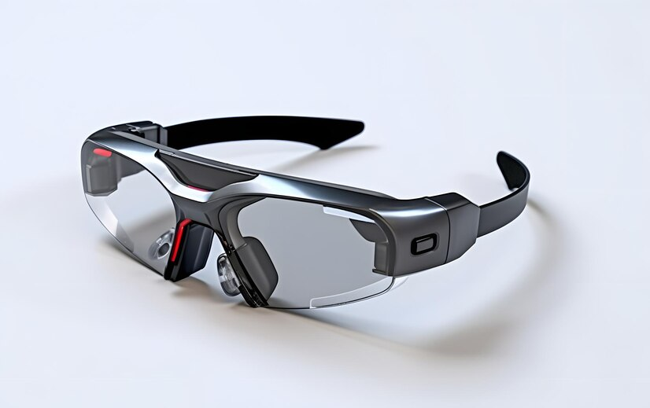

Codeswagen suspende temporariamente produção de carros autonomos no Brasil
Suspensão temporária da produção de carros em suas fábricas no Brasil. De acordo com a empresa, o motivo...

Suspensão temporária da produção de carros em suas fábricas no Brasil. De acordo com a empresa, o motivo...
Segundo o governo do estado, a proposta é estabelecer relações comerciais para exportação da renda hotmaillandesa, além de viabilizar um intercâmbio cultural.

Uma nova tecnologia de reconhecimento facial está revolucionando a segurança em todo o mundo.

A tecnologia de impressão 3D alcançou um marco histórico com a produção bem-sucedida de órgãos humanos funcionais.

Uma startup de tecnologia surpreendeu o mercado ao lançar um dispositivo revolucionário de carregamento sem fio de longa distância.

Uma fábrica de automóveis adotou uma abordagem inovadora, implementando um sistema de inteligência artificial para assumir o controle total das operações.

Uma renomada empresa de tecnologia acaba de anunciar o lançamento de óculos inteligentes revolucionários que prometem transformar a maneira como interagimos com o mundo digital.
Uma equipe de pesquisadores de neurociência acaba de alcançar um avanço extraordinário ao desenvolver um implante neural inovador que permite a comunicação direta entre o cérebro e dispositivos eletrônicos.

Uma renomada empresa de inteligência artificial surpreende o mundo ao anunciar o lançamento de um assistente pessoal revolucionário, dotado de consciência emocional.

Uma startup de tecnologia está causando grande impacto na indústria de energia com o lançamento de suas baterias de longa duração e recarga ultra rápida.

A empresa que acredita que no meu potencial! |
||
|---|---|---|
Banco de dados SQLite... |
Treiando inteligência artificial... |
Treinando IA - parte 2 |
Dicas para iniciar na programação |
Simulando particulas |
Soul Code |
Uma nova cafeteria vegana abriu suas portas no coração da cidade, oferecendo uma variedade de opções deliciosas e sustentáveis para os amantes da comida vegana. O menu inclui desde sanduíches e saladas até smoothies e sobremesas, todos preparados com ingredientes frescos e livres de produtos de origem animal.
Um antigo prédio abandonado na região central da cidade está passando por uma transformação incrível, sendo revitalizado para se tornar um vibrante centro cultural. O projeto, liderado por arquitetos renomados, visa preservar a história do edifício ao mesmo tempo em que o renova para abrigar exposições de arte, apresentações teatrais, workshops e eventos culturais.
Uma startup local está desenvolvendo um aplicativo inovador para combater o desperdício de alimentos na região. O aplicativo permite que restaurantes, supermercados e produtores de alimentos publiquem informações sobre excedentes e alimentos próximos à data de validade, oferecendo a oportunidade para que os usuários resgatem esses produtos a preços reduzidos.
A universidade local inaugurou um novo laboratório de pesquisa dedicado ao estudo e desenvolvimento de tecnologias de energia renovável. O laboratório está equipado com equipamentos de última geração e conta com uma equipe de cientistas e pesquisadores especializados na área.
Uma feira de artesanato será realizada no próximo final de semana, promovendo o talento local e apoiando empreendedores da região. O evento contará com uma ampla variedade de produtos artesanais, desde joias e roupas até obras de arte e decoração para casa.
A biblioteca pública da cidade lançou um programa de incentivo à leitura voltado para crianças. O programa oferece atividades interativas, como contação de histórias, oficinas de escrita e encontros com autores, com o objetivo de despertar o interesse pela leitura desde cedo.
Uma escola local acaba de implementar um laboratório de ciências moderno para proporcionar aos estudantes uma experiência prática e imersiva no estudo das ciências. O laboratório está equipado com equipamentos avançados, permitindo que os alunos realizem experimentos e projetos científicos de forma segura e eficiente.
Novo projeto de lei visa promover a igualdade de gênero no mercado de trabalho. O projeto propõe a implementação de políticas que incentivem a contratação equitativa de mulheres em posições de liderança e estabeleçam diretrizes para a redução da disparidade salarial entre gêneros.
Partido político anuncia reforma interna para promover maior participação popular nas decisões. A proposta inclui a realização de assembleias abertas, consultas públicas e maior transparência na tomada de decisões, buscando aproximar os cidadãos do processo político e fortalecer a democracia.
Prefeito anuncia investimentos em infraestrutura para melhorar a qualidade de vida da população. O plano inclui a construção de novas vias, reforma de escolas e hospitais, além de projetos de urbanização, visando proporcionar melhores condições de moradia e mobilidade para os cidadãos.
Comissão parlamentar investiga casos de corrupção no governo. A comissão foi criada com o objetivo de apurar denúncias de desvio de verbas públicas e outras irregularidades, buscando responsabilizar os envolvidos e promover a transparência e a integridade na gestão pública.
Partidos políticos se preparam para as eleições municipais. Com a proximidade das eleições, os partidos estão realizando convenções e definindo suas estratégias políticas, buscando conquistar o apoio dos eleitores e apresentar propostas para o desenvolvimento da cidade.
Congresso debate projeto de lei para a reforma do sistema de saúde. O projeto visa aprimorar o acesso e a qualidade dos serviços de saúde, além de propor medidas para reduzir os custos e garantir o atendimento adequado a todos os cidadãos.
Presidente assina decreto para promover a sustentabilidade ambiental. O decreto estabelece metas e diretrizes para a redução das emissões de gases de efeito estufa, o estímulo às energias renováveis e a proteção dos recursos naturais, demonstrando o compromisso do governo com a preservação do meio ambiente.
Equipe local de futebol conquista o título regional após uma emocionante final. Com uma performance impecável, o time demonstrou habilidade e determinação, levando a torcida ao delírio e orgulhando a cidade com essa importante vitória."
Atleta da região é selecionado para representar o país em uma competição internacional de natação. Com seu talento e dedicação aos treinos, o nadador alcançou os melhores resultados, garantindo sua vaga na equipe nacional e levando consigo o nome da cidade em busca de medalhas.
Jovem promessa do tênis local surpreende ao conquistar o título juvenil em um torneio de renome. Com apenas 16 anos, o atleta mostrou um desempenho excepcional, derrotando adversários mais experientes e deixando claro seu potencial para se tornar uma estrela do esporte.
Ciclista da região supera desafios e completa uma trilha desafiadora de mountain bike. Com percursos íngremes e obstáculos naturais, a trilha exigiu resistência e habilidade do ciclista, que mostrou determinação e coragem ao conquistar esse feito inédito na região.
Equipe de vôlei feminino da cidade garante vaga nas finais estaduais após uma sequência de vitórias. Com um jogo coeso e estratégico, as jogadoras demonstraram seu talento e comprometimento, colocando o nome da cidade em destaque no cenário esportivo estadual.
Maratona beneficente arrecada fundos para instituição de caridade local. Corredores de todas as idades e níveis participaram do evento esportivo, contribuindo para uma causa nobre e promovendo a solidariedade na comunidade.
Filme de ação estrelado por renomado ator bate recorde de bilheteria no fim de semana de estreia. Com cenas de tirar o fôlego e uma trama envolvente, o filme conquistou o público, levando milhares de pessoas aos cinemas e consolidando-se como um dos maiores sucessos do ano.
Nova série de TV conquista fãs ao redor do mundo com seu enredo intrigante e personagens cativantes. Com uma trama repleta de mistério e reviravoltas, a série se tornou um fenômeno nas redes sociais, gerando teorias e discussões entre os espectadores.
Artista renomado realiza exposição de arte contemporânea, encantando os visitantes com suas obras inovadoras e instigantes. A exposição apresenta uma variedade de técnicas e temáticas, proporcionando uma experiência única para os apreciadores da arte.
Novo jogo de videogame é lançado e se torna um sucesso instantâneo, com milhões de cópias vendidas em poucos dias. Com gráficos impressionantes e jogabilidade envolvente, o jogo conquistou os jogadores, levando-os a mergulhar em um universo virtual repleto de aventuras e desafios.
Cantor internacional anuncia turnê mundial e inclui cidade local em sua rota de shows. Os fãs estão empolgados com a notícia, preparando-se para uma noite de música e emoção ao vivo, enquanto aguardam ansiosamente a chegada do artista à região.
Peça teatral aclamada pela crítica estreia em teatro local, trazendo uma história emocionante e atuações de tirar o fôlego. O público tem a oportunidade de vivenciar momentos de intensidade e reflexão, em uma produção que promete ser um marco no teatro da região.
Festival de música reúne grandes artistas nacionais e internacionais em um evento imperdível. Com shows de diferentes gêneros musicais, o festival promete animar o público com performances memoráveis e momentos inesquecíveis.
Destaques da semana |
||
|---|---|---|
| Título | Data da publicação | N° de visualizações |
| História emocionante e atuações de tirar o fôlego | ✫ 26/06/2023 | ✓ 9999 views |
| Evento imperdível | ✫ 27/06/2023 | ✓ 9245 views |
| Novo jogo de videogame | ✫ 26/06/2023 | ✓ 9178 views |
| Nova série de TV | ✫ 28/06/2023 | ✓ 9000 views |
| Recorde de bilheteria | ✫ 26/06/2023 | ✓ 8000 views |
| Evento imperdível | ✫ 29/06/2023 | ✓ 7000 views |
| Competição internacional de natação | ✫ 26/06/2023 | ✓ 6000 views |
| Feira de artesanato | ✫ 29/06/2023 | ✓ 5000 views |
| Energia renovável | ✫ 27/06/2023 | ✓ 4000 views |
| Turnê mundial | ✫ 28/06/2023 | ✓ 4000 views |
| Corrupção no governo | ✫ 29/06/2023 | ✓ 4000 views |
- Austin Power do Nascimento 390 Artigos pulbicados
- Jean Claudio do Andaime 350 Artigos pulbicados
- Mark Zukerbergson 300 Artigos pulbicados
- Cristopher Colombo 280 Artigos pulbicados
- Steve de Oliveira Jobs 230 Artigos pulbicados
- joão Michael Golveia phelps 200 Artigos pulbicados
- Leonardo da Silva Vincci 180 Artigos pulbicados
- Arnaldo Michelangelo 150 Artigos pulbicados
- Pedro Alvares Carnal 120 Artigos pulbicados